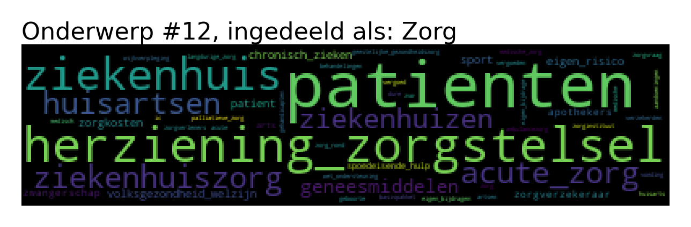

Nog net voor de verkiezingen deel 2 van het motie-onderzoek! Naast deze blog heb ik ook nog de StemVinder ontwikkeld om snel relevante moties te vinden.
In dit deel kijk ik naar de inhoud van de moties. Op de moties te clusteren naar onderwerp gebruikte ik in eerste instantie een bekende techniek Latent Dirichlet Allocation, maar via een gelukkig toeval kwam ik achter een gloednieuwe aanpak die veel beter werkt! Longhow Lam heeft deze toegepast op kamerdebatten van de Tweede Kamer.
Het Top2Vec algoritme probeert soortgelijke woorden en documenten te clusteren en hieruit onderwerpen te destilleren. In de wordcloud hierboven staan heel generieke woorden die in veel moties voorkomen. Deze zijn niet onderscheidend en worden er automatisch uitgefilterd door het algoritme. Echt weer zo’n voorbeeld van een doorbraak in machine learning die sneller en beter werkt waardoor oude technieken bij het grofvuil kunnen.
Bij de moties worden er ongeveer 250 topics geïdentificeerd. In deze onderwerpen zit wat overlap en het is een beetje lastig visualiseren, dus uiteindelijk heb ik die voor deze blogpost samengevoegd tot 15. Onderop deze blog staan wordclouds van de 15 onderwerpen.
Welk soort onderwerpen staan op de agenda?
Eerst kijken we naar de ontwikkeling van de onderwerpen van de ingediende moties. We weten al dat het absoluut aantal moties stijgt, dus heb ik gekeken naar de relatieve verdeling van de onderwerpen.
Opvallend dat de verhoudingen redelijk stabiel zijn! Je ziet dat in de loop van de tijd klimaat en energie, milieu en regelgeving (heel veel coronaregels zitten hier ook in gecategoriseerd), sociale zaken en wonen omhoog gaan. Omlaag gaan landbouw en dierenwelzijn, natuur en gaswinning, onderwijs en openbaar vervoer. Binnen de onderwerpen zijn natuurlijk wel verschuivingen waar het precies over gaat. We onderzoeken nu de ingediende moties tijdens de afgelopen Tweede Kamer periode.
Meest actieve partijen per onderwerp
We onderzoeken welke partijen het meest actief zijn door op drie manieren naar de data te kijken:
- Aantal ingediende moties (per partij per onderwerp)
- Aantal succesvolle moties
- Aantal succesvolle moties per zetel
In bovenstaande grafiek zien we bijvoorbeeld dat op onderwijs de meeste moties worden ingediend door Groenlinks (1 in de grafiek), gevolgd door de SP (2), PvdA (3) en D66 (4). Een punt van aandacht is dat deze analyse niet aangeeft wat de partijen met de moties willen bereiken, bijvoorbeeld op openbaar vervoer wil VVD waarschijnlijk heel iets anders bereiken dan SP.
PVV is erg actief op justitie, en de PvdD op klimaat, dierenwelzijn milieu en natuur. Ook de enorme output van de SP valt op! Maar ingediend is niet hetzelfde als aangenomen, dat wordt de volgende grafiek:
Wat betreft het aantal succesvolle moties dan zien we daar ineens vier partijen bovendrijven: CDA, D66, GroenLinks en de VVD. Veel regeringspartijen, dat is logisch want die hebben een meerderheid. Ook vind ik het opvallend dat PvdA echt op sociale zaken en het pensioenstelsel succesvol is en GroenLinks op de andere onderwerpen.
Nu kijken we naar het aantal succesvolle moties per zetel
Met je stem koop je op 17 maart politieke invloed. Dit overzicht geeft weer hoeveel ‘waar je voor je geld’ krijgt, hoeveel succesvolle moties een zetel van een partij er doorheen krijgt per onderwerp. Het is weer een heel ander beeld: de christelijke partijen doen het heel erg goed (even gecheckt en inderdaad het Dik-Faber effect bij de ChristenUnie op Zorg, Voordewind op Buitenlandse zaken) en de SP komt een stuk minder terug. Opvallend ook dat D66 relatief weinig scoort op Onderwijs. Partijen die minder in de prijzen vallen zijn FvD (nr 5 op Europese Unie), de PVV nergens en de VVD op financiele sector (nr 5). Bij de VVD is dit te verklaren doordat ze veel zetels bekleedt.
Waar richten de partijen zich op?
In bovenstaande grafieken hebben we de partijen onderling vergeleken. Nu kijken we per partij op welk vlak ze het meest actief zijn
Als een partij een aantal heel grote bollen heeft betekent dit dat de partij zich heel erg richt op dit onderwerp. Zijn er geen grote bollen binnen een partij is de inzet meer over de onderwerpen verspreid. Algemene zaken, Onderwijs en Zorg krijgen bij veel partijen veel aandacht. Daarnaast hebben FvD, PVV, 50PLUS en de PvdD een heel uitgesproken profiel. In het achterliggende notebook heb ik ook nog gekeken naar de ontwikkelingen per partij van de afgelopen 4 kamerperiodes.
hide
Ontwikkeling per partij
Stemgedrag per onderwerp
Dan toch nog eens proberen het stemgedrag te visualiseren. Als de VVD iets indient voor de Financiele Sector betekent dit namelijk iets heel anders dan als de SP dat doet. In onderstaande plots staat per onderwerp het stemgedrag gevisualiseerd. Positief of negatief zegt niets, het gaat om partijen die dichtbij of ver weg van elkaar staan. PvdD en VVD vormen meestal de uitersten en verschillen dus het meeste op stemgedrag. Deze grafieken verklaren meestal zo’n 35%-55% van de variatie in het stemgedrag. Let op: het is dus een versimpeling van de werkelijkheid!
‘#’ geeft het aantal moties aan en ‘%’ het percentage dat deze visualisatie verklaart. Het meest opvallend is dat FvD en PVV soms in het midden zitten en soms aan de rechterkant. Bij de Europese Unie mengen SP, PvdD en de SGP zich hier ook in. Als het gaat om pensioenen zitten ze juist meer aan de linkerkant. De groep PvdD, SP, GroenLinks, PvdA en DENK zit standaard links, alleen wederom bij de EU en pensioenstelsel wordt gehusseld. 50PLUS zit vaak in het midden, behalve bij pensioenstelsel.
Onderzoek naar klimaat
Omdat ik denk dat klimaat de grootste uitdaging is voor de mensheid heb ik hier de subonderwerpen nog eens doorgenomen. Natuur en milieu zijn natuurlijk ook heel erg belangrijke onderwerpen, maar toch besloten het even bij het klimaat te houden.
De vraag is op welke partij je stemt: PvdD dient enorm veel moties in en bepaalt hier wel het debat mee. Maar D66 en GroenLinks dienen dan weer meer succesvolle moties in.
En hier houdt het een beetje op, voor een stemadvies moet je namelijk uiteindelijk toch weten waar de partijen voor staan. Laat ik daar nu net de StemVinder voor hebben gemaakt. Veel plezier ermee!
Tip
Bedankt Dimo Angelov, bedenker en ontwikkelaar van Top2Vec, Longhow Lam voor de LinkedIn blogpost en Willem Glasbergen voor de tip! Zonder deze drie was het niet gelukt :-)
Bijlage: classificering van de onderwerpen
